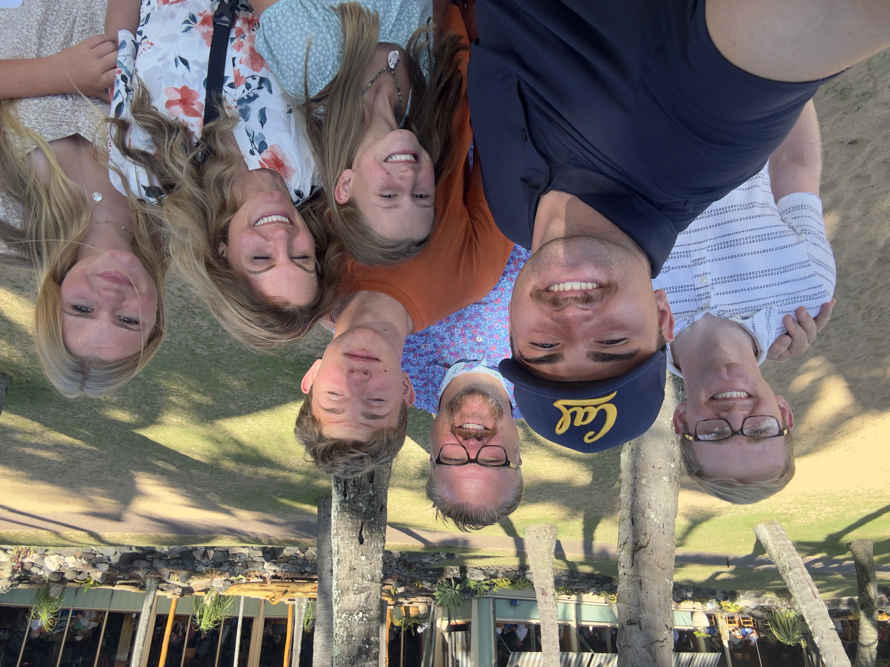
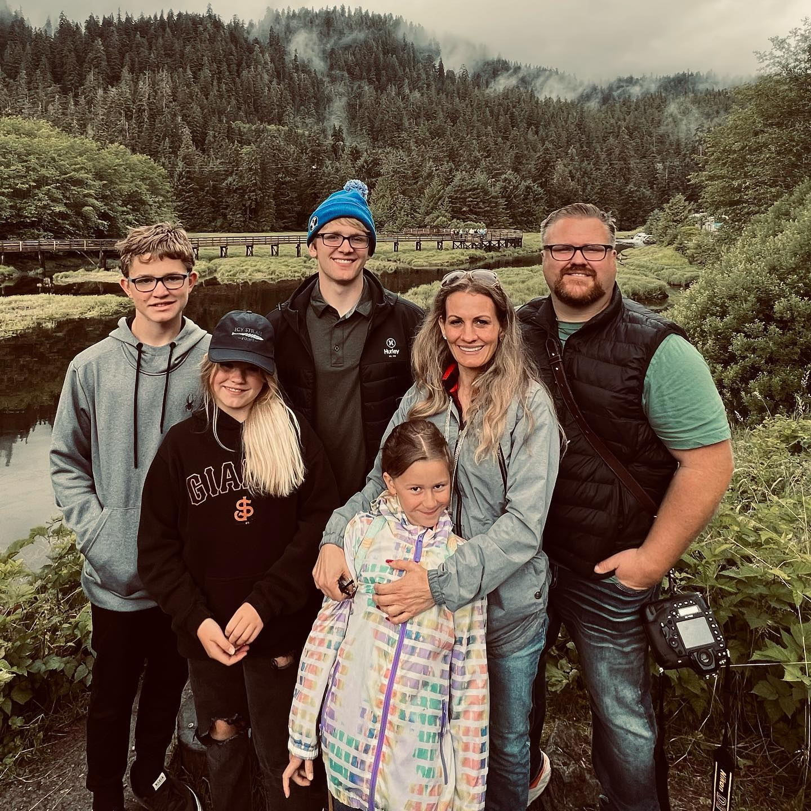
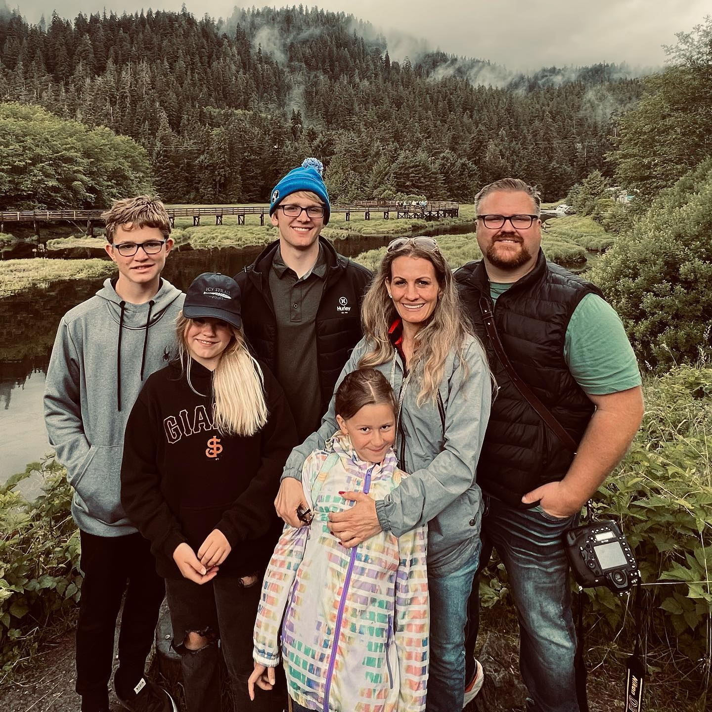

The time is:
Hi! My name is Jaxon Jones, I am 21 years old and a Cybersecurity major at BYU. I am currently a sophomore and just got back from mission Trujillo Perú Sur in July. I am from Danville, CA, which you probably haven't heard of and are probably are only thinking of Phineas and Ferb right now.
Family
My dad's name is Troy, he works as the co-owner of a political mail print shop with my uncle. He's a real jokester and really enjoys going on trips and participating in his kids' sports by taking their pictures with his mini army of cameras. My mom's name is Shawnel and she has the full time job of being the one that has to put up with my siblings every day. She enjoys listening to audiobooks, spending time with her kids, and using my FamilySearch account to find ancestors. I am also her favorite, which she won't admit, but it's totally true. I am the oldest of 5 children and, therefore, the guinea pig of the family. My brother Talan is 19 years old and is currently sweating off everything under the sun in Fiji on his mission. He is a D1 rugby athlete for UC Berkeley and enjoys very much being as obnoxious as possible. My next brother's name is Caleb and he's 16 years, but I'm still too terrified to get in a car with him. He really likes animals and making up his own sorts of board games, along the special talent being able to lose anything. My sister Kaydense is 14 and is obsessed with being as trendy as possible. She is the unfiltered source of teenage sarcasm, Gen Z slang, and thinking everything is the end of the world. She can also be really nice if she's in the mood, which happens from time to time. My last sister, McKenzie, is the fireball of the family, always full of energy and none of that is ever filtered. She is very outspoken and if you watch Ammon Montenegro, she shows up in one of his videos.
Hobbies
I really enjoy playing video games in my free time, especially when I can do it with friends. I normally go for first person story type games, like Minecraft, Destiny, Skyrim/Fallout, Halo, and Titanfall. I also enjoy reading books, especially in the realm of sci-fi or fantasy literature. My favorite book at the moment is Ready Player One, but I honestly am always down to find new stuff to read when I have the time. I am also a huge fan of listening to music from a multitude of genres. I listen to music whenever I'm doing literally anything and I prefer to listen to pop, punk, rock, or soundtrack music, with the occasional meme music. Lastly, I really like hanging out with my friends. If I can get friends to do it with me, I'm always willing to try some new cool thing like rock climbing or swing dancing. Plus, I'm hilarious if I want to be, especially playing board games.
Cool Trips I've Taken
In July 2023 I took a 1 week cruise trip that went through Greece and Rome. It started in Rome where I was able to eat authentic italian pasta and see a bunch of the cool sites, like the Colosseum and Pantheon. Afterwards, we passed through Turkey and a bunch of islands like Santorini. We ended in Athens where I was able to see the Parthenon. In the summer of 2022, I went on a HXP trip to Puerto Rico, where I was able to perform service by building a house, which was really cool to do. But also, I was able to try new food, go ziplining, hike through the jungle shirtless, learn salsa dancing, and lived in a concrete house with no hot water. Lastly, I went to Alaska with all the family from my mom's side on a cruise in July 2022. We got to see a bunch of cool stuff like glaciers and a lumberjack show, along with a ton of cool wildlife like a bald eagle. I also enjoyed being on the cruise ship and being able to go the buffets every day and eat as much as I wanted.
 
